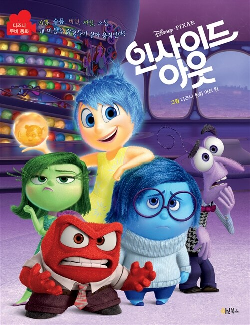
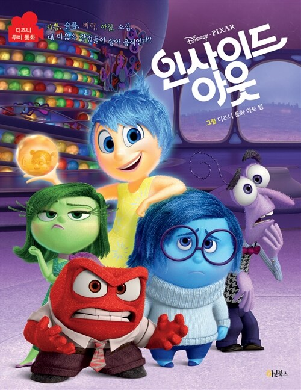
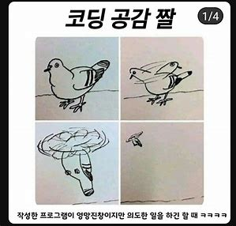

👋 안녕하세요, 저는 이승준입니다!
👶 기본 정보
나이: 16살
학교: 장곡고등학교 2학년
MBTI: ISTJ
🚀 장래희망
저는 (미정) 개발자가 되는 것이 꿈이에요.
뭘 만들지는 아직 확실하지 않아요.

💪 내가 잘하는 것
- 코딩, 게임

📚 감명 깊게 읽은 책 & 영화
책: 『어린왕자』 – 은근 재밌게 본 책이었어요.
영화: 인사이드 아웃 – 감동적인 영화였어요.
 

📬 나의 좌우명
"하기 싫은 일을 안하기엔, 여지껏 한 것들이 아깝다."
🔗 나와 연결하기
📸 Instagram 보러가기